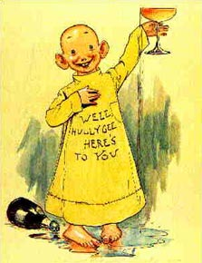
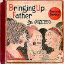
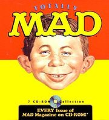

It was
thanks to the print that Dickens became a comic writer. He began as a provider of copy for
a popular cartoonist. To consider the comics here, after "The Print," is to fix
attention upon the persistent print-like, and even crude woodcut, characteristics of our
twentieth-century comics. It is by no means easy to perceive how the same qualities of
print and woodcut could reappear in the mosaic mesh of the TV image. TV is so difficult a
subject for literary people that it has to be approached obliquely. From the three million
dots per second on TV, the viewer is able to accept, in an iconic grasp, only a few dozen,
seventy or so, from which to shape an image. The image thus made is as crude as that of
the comics. It is for this reason that the print and the comics provide a useful approach
to understanding the TV image, for they offer very little visual information or connected
detail. Painters and sculptors, however, can easily understand TV, because they sense how
very much tactile involvement is needed for the appreciation of plastic art.
The
structural qualities of the print and woodcut obtain, also, in the cartoon, all of which
share a participational and do-it-yourself character that pervades a wide variety of media
experiences today. The print is clue to the comic cartoon, just as the cartoon is clue to
understanding the TV image.

Outcault's "Yellow Kid"

Many a
wrinkled teenager recalls his fascination with that pride of the comics, the "Yellow
Kid" of Richard F. Outcault. On first appearance, it was called "Hogan's
Alley" in the New York Sunday World. It featured a variety of scenes of kids
from the tenements, Maggie and Jiggs as children, as it were. This feature sold many
papers in 1898 and thereafter. Hearst soon bought it, and began large-scale comic
supplements. Comics (as already explained in the chapter on The Print), being low in
definition, are a highly participational form of expression, perfectly adapted to the
mosaic form of the newspaper. They provide, also, a sense of continuity from one day to
the next. The individual news item is very low in information, and requires completion or
fill-in by the reader, exactly as does the TV image, or the wirephoto. That is the reason
why TV hit the comic-book world so hard. It was a real rival, rather than a complement.
But TV hit the pictorial ad world even harder, dislodging the sharp and glossy, in favor
of the shaggy, the sculptural, and the tactual. Hence the sudden eminence of MAD magazine
which offers, merely, a ludicrous and cool replay of the forms of the hot media of photo,
radio, and film. MAD is the old print and woodcut image that recurs in various
media today. Its type of configuration will come to shape all of the acceptable TV
offerings.
"Jiggs has served his purpose. He is a has-been, isolated in his own
family. He is an autumn sunset seen against the brewery and the gas works."
The biggest
casualty of the TV impact was Al Capp's "Li'l Abner." For eighteen years Al Capp
had kept Li'l Abner on the verge of matrimony. The sophisticated formula used with his
characters was the reverse of that employed by the French novelist Stendhal, who said,
"I simply involve my people in the consequences of their own stupidity and then give
them brains so they can suffer." Al Capp, in effect, said, "I simply involve my
people in the consequences of their own stupidity and then take away their brains
so that they can do nothing about it." Their inability to help themselves created a
sort of parody of all the other suspense comics. Al Capp pushed suspense into absurdity.
But readers have long enjoyed the fact that the
Dogpatch predicament of helpless ineptitude was a paradigm of the human situation,
in general.
Al Capp's Dogpatch, the tenth circle of Hell: "the capacity of people
to involve themselves in hideous difficulties, along with their entire inability to turn a
hand to help themselves."
With the
arrival of TV and its iconic mosaic image, the everyday life situations began to seem very
square, indeed. Al Capp suddenly found that his kind of distortion no longer worked. He
felt that Americans had lost their power to laugh at themselves. He was wrong. TV simply
involved everybody in everybody more deeply than before. This cool medium, with its
mandate of participation in depth, required Capp to refocus the Li'l Abner image. His
confusion and dismay were a perfect match for the feelings of those in every major
American enterprise. From Life to General Motors, and from the classroom to the
Executive Suite, a refocusing of aims and images to permit ever more audience involvement
and participation has been inevitable. Capp said: "But now America has changed. The
humorist feels the change more, perhaps, than anyone. Now there are things about America
we can't kid."

What, me worry?
Depth
involvement encourages everyone to take himself much more seriously than before. As TV
cooled off the American audience, giving it new preferences and new orientation of sight
and sound and touch and taste, Al Capp's wonderful brew also had to be toned down. There
was no more need to kid Dick Tracy or the suspense routines. As MAD magazine
discovered, the new audience found the scenes and themes of ordinary life as funny as
anything in remote Dogpatch. MAD magazine simply transferred the world of ads into
the world of the comic book, and it did this just when the TV image was beginning to
eliminate the comic book by direct rivalry. At the same time, the TV image rendered the
sharp and clear photographic image as blur and blear. TV cooled off the ad audience until
the continuing vehemence of the ads and entertainment suited the program of the MAD magazine
world very well. TV, in fact, turned the previous hot media of photo, film, and radio into
a comic-strip world by simply featuring them as overheated packages. Today the
ten-year-old clutches his or her MAD ("Build up your Ego with MAD") in
the same way that the Russian beatnik treasures an old Presley tape obtained from a G.I.
broadcast. If the "Voice of America" suddenly switched to jazz, the Kremlin
would have reason to crumble. It would be almost as effective as if the Russian citizens
had copies of Sears Roebuck catalogues to goggle at, instead of our dreary propaganda for
the American way of life.
The industrialized world was an unsustainable tour
de force that deranged an entire society and era; but it did not affect integral man,
i.e. the clown, the lover, the madman and the poet.
'Imagination is that ratio among the perceptions and faculties which
exists when they are not embedded or outered in material teachnolgies.'
Picasso has
long been a fan of American comics. The highbrow, from Joyce to Picasso, has long been
devoted to American popular art because he finds in it an authentic imaginative reaction
to official action. Genteel art, on the other hand, tends merely to evade and disapprove
of the blatant modes of action in a powerful high definition, or "square,"
society. Genteel art is a kind of repeat of
the specialized acrobatic feats of an industrialized world. Popular art is the
clown reminding us of all the life and faculty that we have omitted from our daily
routines. He ventures to perform the specialized routines of the society, acting as
integral man. But integral man is quite
inept in a specialist situation. This, at least, is one way to get at the art of
the comics, and the art of the clown.
The pictorial is a specific packaged product designed for passive consumption; the iconic
cartoon is depth-involving: it invites active participation, i.e. fill-in.
Today our
ten-year-olds, in voting for MAD, are telling us in their own way that the TV image
has ended the consumer phase of American culture. They are now telling us what the
eighteen-year-old beatniks were first trying to say ten years ago. The pictorial consumer age is dead. The iconic age
is upon us. We now toss to the Europeans the package that concerned us from 1922 to
1952. They, in turn, enter their first consumer age of standardized goods. We move into
our first depth-age of art-and-producer orientation. America is Europeanizing on as
extensive a pattern as Europe is Americanizing.
Where does
this leave the older popular comics? What about "Blondie" and "Bringing Up
Father"? Theirs was a pastoral world of primal innocence from which young America has
clearly graduated. There was still adolescence in those days, and there were still remote
ideals and private dreams, and visualizable goals, rather than vigorous and ever-present
corporate postures for group participation.
reading ––> visualization ––> private goals ––>
passive consumerism ––> hot media, radio,
movie ––>
I.e., the integral man is quite inept in a specialist situation.
The chapter
on The Print indicated how the cartoon is a do-it-yourself form of experience that has
developed an ever more vigorous life as the electric age advanced. Thus, all electric
appliances, far from being labor-saving devices, are new forms of work, decentralized and
made available to everybody. Such is, also, the world of the telephone and the TV image
that demands so much more of its users than does radio or movie. As a simple consequence
of this participational and do-it-yourself aspect of the electric technology, every kind
of entertainment in the TV age favors the same kind of personal involvement. Hence the
paradox that, in the TV age, Johnny can't read because reading, as customarily taught, is
too superficial and consumerlike an activity. Therefore the highbrow paperback, because of
its depth character, may appeal to youngsters who spurn ordinary narrative offerings.
Teachers today frequently find that students who can't read a page of history are becoming
experts in code and linguistic analysis. The problem, therefore, is not that Johnny can't
read, but that, in an age of depth involvement, Johnny can't visualize distant goals.
Illumination - The Book of Kells
The first
comic books appeared in 1935, Not having anything connected or literary about them, and
being as difficult to decipher as the Book of Kells, they caught on with the young.
The elders of the tribe, who had never noticed that the ordinary newspaper was as frantic
as a surrealist art exhibition, could hardly be expected to notice that the comic books
were as exotic as eighth-century illuminations. So, having noticed nothing about the form,
they could discern nothing of the contents, either. The mayhem and violence were
all they noted. Therefore, with naive literary logic, they waited for violence to flood
the world. Or, alternatively, they attributed existing crime to the comics. The
dimmest-witted convict learned to moan, "It wuz comic books done this to me."
Meantime, the violence of an industrial and mechanical
environment had to be lived and given meaning and motive in the nerves and viscera
of the young. To live and experience anything is to translate its direct impact into many
indirect forms of awareness. We provided the young with a shrill and raucous asphalt
jungle, beside which any tropical animal jungle was as quiet and tame as a rabbit hutch.
We called this normal. We paid people to keep it at the highest pitch of intensity because
it paid well. When the entertainment industries tried to provide a reasonable facsimile of
the ordinary city vehemence, eyebrows were raised.
It was Al
Capp who discovered that until TV, at least, any degree of Scragg mayhem or Phogbound
morality was accepted as funny. He didn't think it was funny. He put in his strip
just exactly what he saw around him. But our trained incapacity to relate one situation to
another enabled his sardonic realism to be mistaken for humor. The more he showed the
capacity of people to involve themselves in hideous difficulties, along with their entire
inability to turn a hand to help themselves, the more they giggled. "Satire,"
said Swift, "is a glass in which we see every countenance but our own."
The comic strip and the ad, then, both belong to
the world of games, to the world of models and extensions of situations elsewhere.MAD
magazine, world of the woodcut, the print, and the cartoon, brought them together with
other games and models from the world of entertainment. MAD is a kind of newspaper
mosaic of the ad as entertainment, and entertainment as a form of madness. Above all, it is a print- and woodcut-form of
expression and experience whose sudden appeal is a sure index of deep changes in our
culture. Our need now is to understand the formal character of print, comic and
cartoon, both as challenging and changing the consumer-culture of film, photo, and press.
There is no single approach to this task, and no single observation or idea that can solve
so complex a problem in changing human perception.